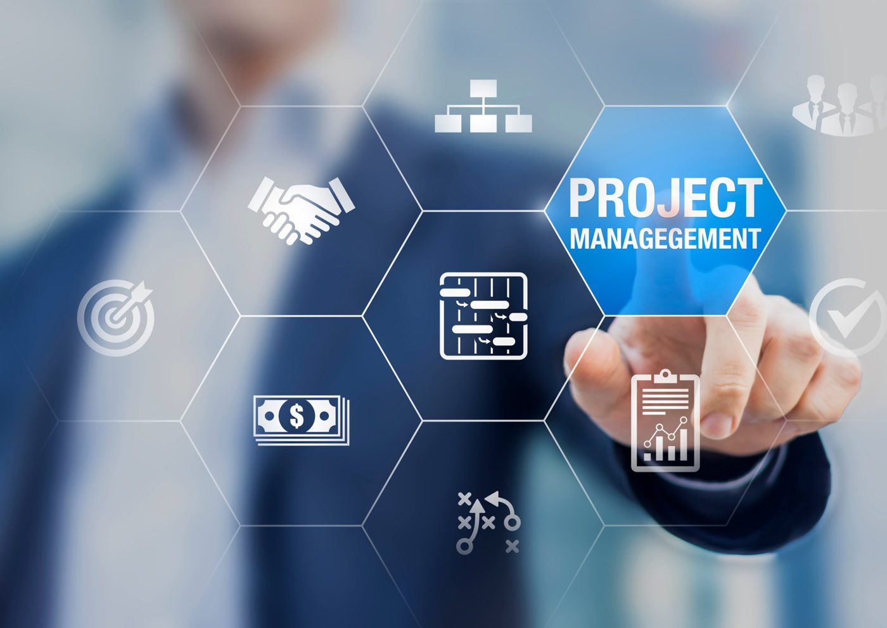

Project ManagementAgile
How to Benchmark and Elevate Your Organization’s PPM Maturity Level
Explore what a PPM maturity assessment involves and why it matters. Learn how to evaluate your organization’s portfolio practices, governance,…
We help our clients implement frameworks and practices that enable effective and efficient decision making, thus better managing the increased size and complexity of their project portfolios.

Our approach to project management is to understand your culture and right-size practices to fit your organizational needs, aligning our recommended structure, tools, and processes with your goals and resources.
Chmltech can lead your organization in establishing or enhancing an effective Project Management Office (PMO) and build your project, program, and portfolio management capabilities. If time is of the essence, our project management consultant will rapidly install a world-class team to begin adding value on Day One. Chmltech can also help transform your organization using key elements from our proven Strategy Realization Model (SRM), addressing your company's strategic direction, strategic alignment, and strategic execution.
Chmltech's offerings include the following distinctive services:
PPM SOFTWARE SELECTION & IMPLEMENTATION
A framework to set priorities, align resources, and execute the projects that accomplish your strategic plans.
Has this happened to you? You spend a week in offsite meetings, planning a strategy that will transform your organization, getting buy-in from key stakeholders and department heads, and revving up the team with a rosy outlook. The next week, everyone gets back to work, doing the same things they do every day, and now they need to make up for the time they lost away from the office. The strategy has already fallen by the wayside.
If that scenario doesn't sound familiar, perhaps one of these will:
Having a clearly defined and well-aligned strategy should allow a company to drive transformation in today's rapidly changing environment. But developing a strategy isn't enough. Organizations must apply a framework that translates the strategy into action and engages both leadership and staff around a shared vision for the future.
Chmltech applied the Strategy Realization Model (SRM) with these specific needs in mind. We combine our time-tested expertise in strategic planning, portfolio management, project execution, and organizational engagement to provide a holistic approach to transforming your organization. To help sustain the transformation, the model relies on change management techniques, which evolved into a system wide operational competency, or what we call progressive adaptation.
How It Works
We will assess the current state of your organization to identify gaps using Chmltech's proven model. Based on the results, we'll work with you to uncover sustainable solution that address the gaps that prevent you from reliably executing your strategy.
In the same collaborative way, we will tailor the Strategy Realization Model to suit your organization's unique business model, culture, and competencies. The resulting customized model provides the structure to stay focused on the strategic imperatives. For example, the projects that will have the most impact on achieving the strategies will receive the appropriate resources, and priorities will be determined based on facts rather than opinions. When projects and programs are effectively supporting strategic initiatives, it creates organizational concentricity, essentially a centralized force that draws all effort toward the common strategic goals.
Strategy realization doesn't end when the critical projects are complete; it requires constant discipline. The model is an ongoing tool that will help you to complete projects, measure them over time to ensure they are generating the expected value, and adapt and evolved strategies, initiatives, and tactics as necessary.
Contact us to learn how we can help transform your business.
From our insights
Explore what a PPM maturity assessment involves and why it matters. Learn how to evaluate your organization’s portfolio practices, governance,…

Unlock success with project alignment strategies in your project portfolio management. Discover effective project alignment strategies now!

Discover five essential change management models—ADKAR, Kotter, Lewin, McKinsey, and Nudge Theory—to drive AI and data transformation success.
Book a strategy call. We will talk through your goals, pain points and where AI, systems or process work can make the biggest difference.
Or email info@chmltech.com